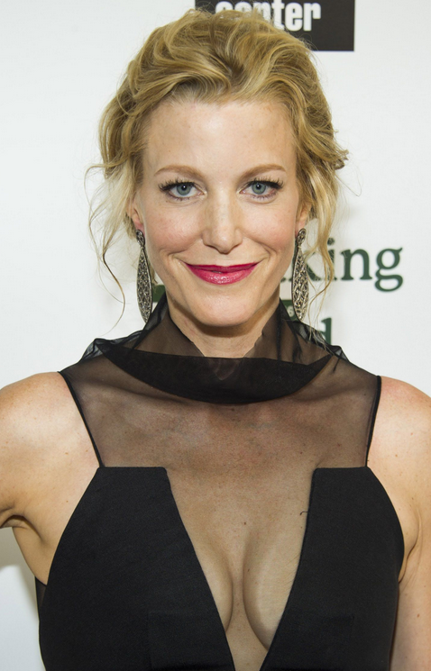
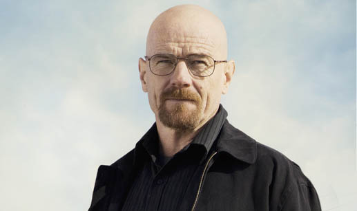

Clique sobre as áreas destacadas em vermelho

Anna Gunn é uma atriz americana. Ela é conhecida por interpretar Martha Bullock na série de faroeste da HBO Deadwood e Skyler White na série de drama policial da AMC Breaking Bad. Seus prêmios incluem dois Primetime Emmy Awards e um Screen Actors Guild Award.
Aaron Paul é um ator e produtor americano. Ele é mais conhecido por interpretar Jesse Pinkman na série Breaking Bad da AMC e Todd Chavez na comédia dramática animada da Netflix Bojack Horseman.
Bryan Lee Cranston é um ator americano. Ele é mais conhecido por interpretar Walter White na série de drama policial da AMC Breaking Bad e Hal na sitcom da Fox Malcolm in the Middle
Robert John Odenkirk é um ator, comediante, roteirista e produtor americano. Ele é mais conhecido por seu papel como Saul Goodman/Jimmy McGill em Breaking Bad e seu spin-off Better Call Saul. Por este último, ele recebeu seis indicações ao Primetime Emmy Award de Melhor Ator Principal em Série Dramática